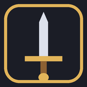
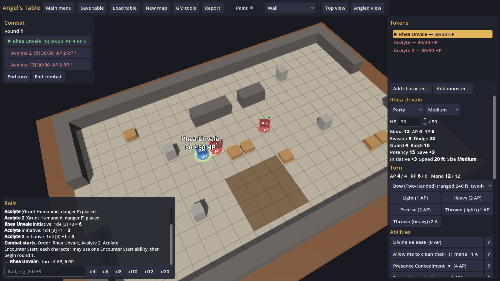
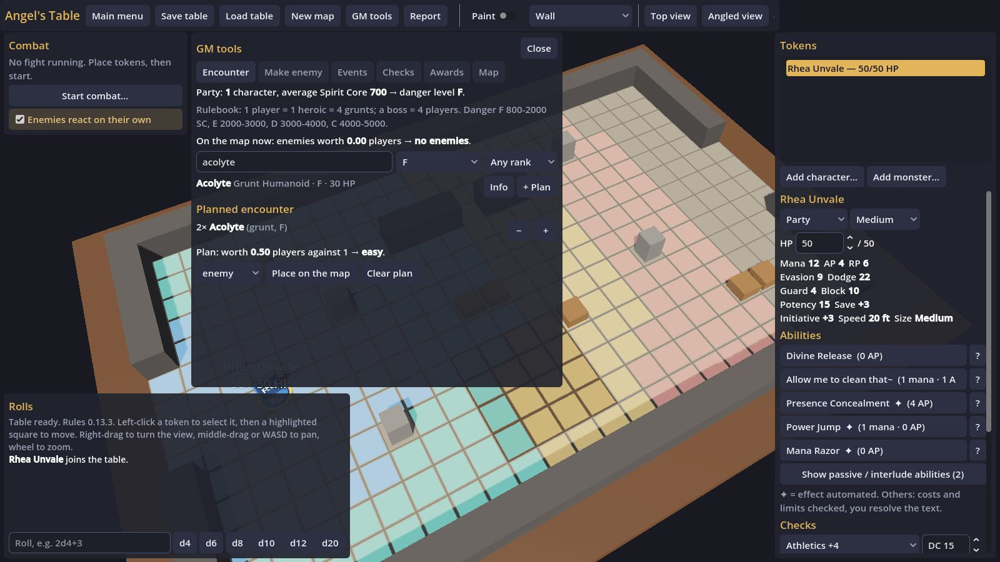
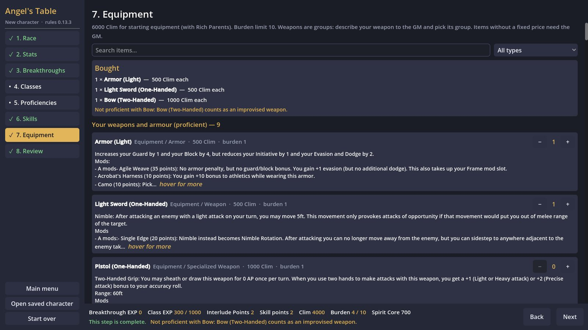
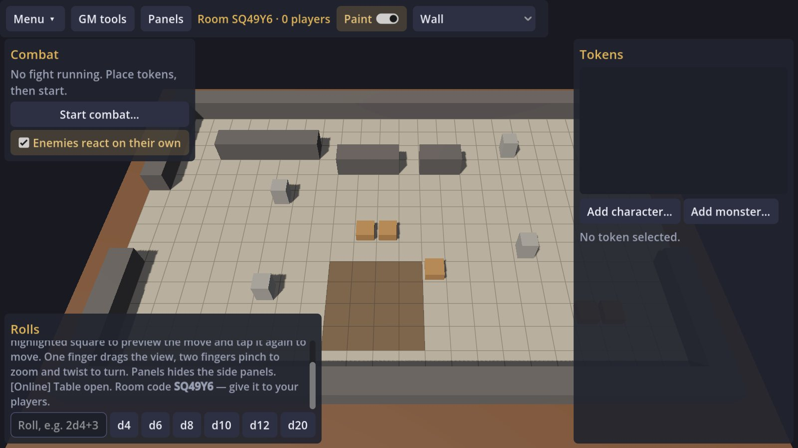
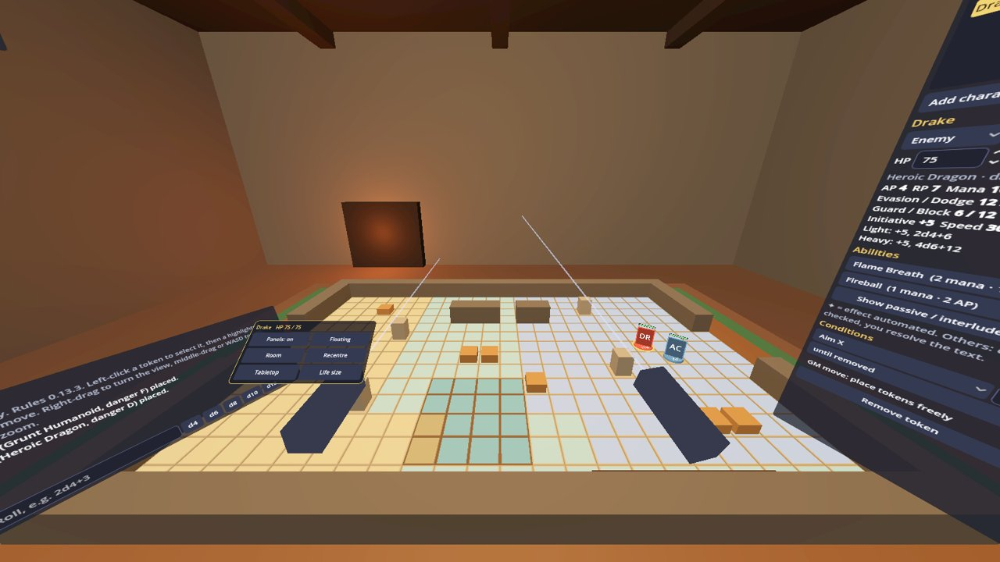

Angel's Table
A 3D tabletop for the Angel's Sword RPG
Build your character, set up a map and run the fight with the rules handled for you, at one table or online with friends. Newest build: v0.14.0 (early test version)





Windows (64-bit)
Unzip and run Angels Table.exe. No install. Mouse and keyboard or a controller. If Windows SmartScreen warns you, choose More info then Run anyway.
Download for WindowsAndroid (phone)
Install the APK (allow installs from your browser when Android asks). Plays sideways. Join a game, or host one as the GM.
Download for AndroidMeta Quest 3 / 3S (VR)
Sideload the APK from a PC with Meta Quest Developer Hub or SideQuest (the headset needs developer mode). Find it under Library, Unknown sources. Controllers. From 0.10.2 on, updates download and install from inside the app.
Download for QuestEvery version checks for updates when it starts and offers them on the main menu. Press Update now: Windows swaps itself and restarts; on Android and Quest the download opens Android's installer, so press Install (the first time, allow Angel's Table to install apps). Coming from Quest 0.10.0 or 0.10.1, sideload 0.10.2 once.
What's in it
- Character creator: race and sub-race, stats, breakthroughs, classes, proficiencies, skills and starting equipment, using the official rules data. It checks every step, shows the gear you're proficient with first, and dims anything you can't afford.
- 3D table: grid maps you paint yourself (walls, cover, difficult terrain) with fog of war, tokens for characters and monsters, and a dice roller with skill checks and saves.
- Combat with the rules handled: initiative, AP and RP, light, heavy, precise and thrown attacks, Dodge and Block with a preview of the result, cover, opportunity attacks, crits, conditions with durations, and being downed.
- Abilities: costs, timing and limits checked for every ability, plus automatic effects for many of them (damage, healing, conditions, knockback, songs, stances and reactions).
- GM tools: an encounter builder over the bestiary with a difficulty rating, a "make an enemy" generator, skill-encounter events, group checks, awards (EXP, IP, Clim and items written straight into the sheets) and a player-view fog check.
- Campaigns: scenes the party travels between, a campaign log, a shared journal, quests and private GM notes; an end-of-session wizard for awards; interludes with every rulebook action (Job, Train, Rest, Recover, Learn Class, Research and more), run automatically, approved by the GM or just tracked; injuries that last until healed; spending EXP on class steps and breakthroughs; and crafting and gathering with crafting dice, strike dice and outcrops.
- Mounts: bring your horse, wolf, boar, pegasus, wyvern or giant dragonfly onto the table and ride it: its speed with your AP, straight-line charges, flying, its attacks on your command, and attackers choosing you or your mount.
- Airships: fly an Aerial Staff (the official models and parts: weapons, shields, engines) with strafing runs, fixed, gimballed and turret weapons and Aerial or Hover Mode; big airships with shields that crash at 0 HP.
- Housing: buy a plot, build your house with crafting points and materials (or hire builders), upgrade it and add facilities like workshops, a sauna, a shrine, an infirmary, a shop or a stable, whose bonuses apply in interludes. Raise animals from eggs into mounts.
- AI GM: a game master that runs the game for you, or helps you as a co-GM (you approve its moves). It narrates, voices NPCs, asks for checks, brings in monsters, plays the enemies' turns and keeps the quests and story log, while the rules engine checks everything it does. Whoever hosts brings their own model: Ollama on their own PC (a phone or Quest host can use their own PC over Wi-Fi), or any OpenAI-compatible or Anthropic API with their own key.
- Online play: the GM hosts, players join with a 6-letter room code and bring their character. Hidden tokens and fogged areas stay hidden from players. If the GM drops, players stay connected and the GM can reopen the room.
- Chat, private whispers and trades: talk to the table, whisper to one person (no one else can read it, not even the GM), and trade Clim and items, which only happens once both sides accept.
- 3D dice tumble onto the table for every roll and land on the result the rules rolled.
- Meta Quest VR: the map as miniatures on a real-size table in a tavern room (or your real room with passthrough). Grab the map to move, turn and stretch it, all the way to life size. Pick up tokens and drop them on a square, throw dice from the dice tray, and keep the same panels as on PC floating around you or standing behind the table like GM screens. A wrist menu has your HP, AP and End turn.
- Controller support everywhere, touch controls on phones, and Quest controllers in VR.
- Bug reports and suggestions straight from the app (main menu or the table's Report button).
Playing online
- The GM picks Play online then Host a new table and shares the room code.
- Each player makes a character in the creator, then picks Play online, types the code, picks their character and presses Join.
- Rejoining from the same PC or phone gives you your character back.
Controls
| Mouse / keyboard | Controller | Phone | Quest | |
|---|---|---|---|---|
| Select a token | Left-click it | Stick or D-pad to the token, A | Tap it | Point and pull the trigger |
| Move / pick a target | Click a highlighted square | A on the square | Tap once to preview, tap again to do it | Trigger on the square, or grip the token and drop it there |
| Turn the view | Right-drag | Right stick | Twist two fingers | Grip with both hands and turn, or right stick left / right |
| Pan | Middle-drag or WASD | Move the cursor | Drag one finger | Grip the air and drag |
| Zoom | Mouse wheel | LT / RT | Pinch | Grip with both hands and stretch, or right stick up / down |
| End turn | End turn button | X | End turn button | End turn on the wrist menu |
| Paint the map (GM) | Turn on Paint, click or drag | View button, A | Turn on Paint, drag one finger | Turn on Paint, hold the trigger and sweep |
| Menus | Y: wrist menu, X: panels on / off, B: back |
Support the Angel's Sword RPG
The game, its world and every rule in this app come from Angel's Sword Studios. If you enjoy playing, back them on Patreon or join their community.
Support them on Patreon